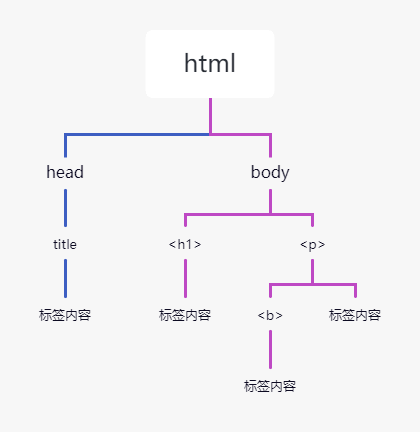

Python BS4解析库用法详解
Beautiful Soup 简称 BS4（其中 4 表示版本号）是一个 Python 第三方库，它可以从 HTML 或 XML 文档中快速地提取指定的数据。Beautiful Soup 语法简单，使用方便，并且容易理解，因此您可以快速地学习并掌握它。本节我们讲解 BS4 的基本语法。
图1：BS4官网LOGO图
Beautiful Soup 将 HTML 文档转换成一个树形结构，该结构有利于快速地遍历和搜索 HTML 文档。下面使用树状结构来描述一段 HTML 文档：
find_all() 使用示例如下：
图1：BS4官网LOGO图
BS4下载安装
由于 Bautiful Soup 是第三方库，因此需要单独下载，下载方式非常简单，执行以下命令即可安装：pip install bs4由于 BS4 解析页面时需要依赖文档解析器，所以还需要安装 lxml 作为解析库：
pip install lxmlPython 也自带了一个文档解析库 html.parser， 但是其解析速度要稍慢于 lxml。除了上述解析器外，还可以使用 html5lib 解析器，安装方式如下：
pip install html5lib该解析器生成 HTML 格式的文档，但速度较慢。
“解析器容错”指的是被解析的文档发生错误或不符合格式时，通过解析器的容错性仍然可以按照既定的正确格式实现解析。
BS4解析对象
创建 BS4 解析对象是万事开头的第一步，这非常地简单，语法格式如下所示：#导入解析包 from bs4 import BeautifulSoup #创建beautifulsoup解析对象 soup = BeautifulSoup(html_doc, 'html.parser')上述代码中，html_doc 表示要解析的文档，而 html.parser 表示解析文档时所用的解析器，此处的解析器也可以是 'lxml' 或者 'html5lib'，示例代码如下所示：
#coding:utf8 html_doc = """ <html><head><title>"c语言中文网"</title></head> <body> <p class="title"><b>c.biancheng.net</b></p> <p class="website">一个学习编程的网站 <a href="http://c.biancheng.net/python/" id="link1">python教程</a> <a href="http://c.biancheng.net/c/" id="link2">c语言教程</a> """ from bs4 import BeautifulSoup soup = BeautifulSoup(html_doc, 'html.parser') #prettify()用于格式化输出html/xml文档 print(soup.prettify())输出结果：
<html>
<head>
<title>
"c语言中文网"
</title>
</head>
<body>
<p class="title">
<b>
c.biancheng.net
</b>
</p>
<p class="website">
一个学习编程的网站
<a href="http://c.biancheng.net/python/" id="link1">
python教程
</a>
<a href="http://c.biancheng.net/c/" id="link2">
c语言教程
</a>
</body>
</html>
如果是外部文档，您也可以通过 open() 的方式打开读取，语法格式如下：
soup = BeautifulSoup(open('html_doc.html', encoding='utf8'), 'lxml')
BS4常用语法
下面对爬虫中经常用到的 BS4 解析方法做详细介绍。Beautiful Soup 将 HTML 文档转换成一个树形结构，该结构有利于快速地遍历和搜索 HTML 文档。下面使用树状结构来描述一段 HTML 文档：
<html><head><title>c语言中文网</title></head><h1>c.biancheng.net</h1><p><b>一个学习编程的网站</b></p></body></html>树状图如下所示：

图1：HTML文档树结构图
文档树中的每个节点都是 Python 对象，这些对象大致分为四类：Tag , NavigableString , BeautifulSoup , Comment 。其中使用最多的是 Tag 和 NavigableString。图1：HTML文档树结构图
- Tag：标签类，HTML 文档中所有的标签都可以看做 Tag 对象。
- NavigableString：字符串类，指的是标签中的文本内容，使用 text、string、strings 来获取文本内容。
- BeautifulSoup：表示一个 HTML 文档的全部内容，您可以把它当作一个人特殊的 Tag 对象。
- Comment：表示 HTML 文档中的注释内容以及特殊字符串，它是一个特殊的 NavigableString。
1) Tag节点
标签（Tag）是组成 HTML 文档的基本元素。在 BS4 中，通过标签名和标签属性可以提取出想要的内容。看一组简单的示例：
from bs4 import BeautifulSoup
soup = BeautifulSoup('<p class="Web site url"><b>c.biancheng.net</b></p>', 'html.parser')
#获取整个p标签的html代码
print(soup.p)
#获取b标签
print(soup.p.b)
#获取p标签内容，使用NavigableString类中的string、text、get_text()
print(soup.p.text)
#返回一个字典，里面是多有属性和值
print(soup.p.attrs)
#查看返回的数据类型
print(type(soup.p))
#根据属性，获取标签的属性值，返回值为列表
print(soup.p['class'])
#给class属性赋值,此时属性值由列表转换为字符串
soup.p['class']=['Web','Site']
print(soup.p)
输出结果如下：
soup.p输出结果:
<p class="Web site url"><b>c.biancheng.net</b></p>
soup.p.b输出结果：
<b>c.biancheng.net</b>
soup.p.text输出结果：
c.biancheng.net
soup.p.attrs输出结果：
{'class': ['Web', 'site', 'url']}
type(soup.p)输出结果：
<class 'bs4.element.Tag'>
soup.p['class']输出结果：
['Web', 'site', 'url']
class属性重新赋值：
<p class="Web Site"><b>c.biancheng.net</b></p>
遍历节点
Tag 对象提供了许多遍历 tag 节点的属性，比如 contents、children 用来遍历子节点；parent 与 parents 用来遍历父节点；而 next_sibling 与 previous_sibling 则用来遍历兄弟节点 。示例如下：#coding:utf8 from bs4 import BeautifulSoup html_doc = """ <html><head><title>"c语言中文网"</title></head> <body> <p class="title"><b>c.biancheng.net</b></p> <p class="website">一个学习编程的网站</p> <a href="http://c.biancheng.net/python/" id="link1">python教程</a>, <a href="http://c.biancheng.net/c/" id="link2">c语言教程</a> and """ soup = BeautifulSoup(html_doc, 'html.parser') body_tag=soup.body print(body_tag) #以列表的形式输出，所有子节点 print(body_tag.contents)输出结果：
<body> <p class="title"><b>c.biancheng.net</b></p> <p class="website">一个学习编程的网站</p> <a href="http://c.biancheng.net/python/" id="link1">python教程</a>, <a href="http://c.biancheng.net/c/" id="link2">c语言教程</a> and </body> #以列表的形式输出 ['\n', <p class="title"><b>c.biancheng.net</b></p>, '\n', <p class="website">一个学习编程的网站</p>, '\n', <a href="http://c.biancheng.net/python/" id="link1">python教程</a>, '\n', <a href="http://c.biancheng.net/c/" id="link2">c语言教程</a>, '\n']Tag 的 children 属性会生成一个可迭代对象，可以用来遍历子节点，示例如下：
for child in body_tag.children:
print(child)
输出结果：
#注意此处已将换行符"\n"省略 <p class="title"><b>c.biancheng.net</b></p> <p class="website">一个学习编程的网站</p>想了解更多相关示例可参考官方文档：点击前往
find_all()与find()
find_all() 与 find() 是解析 HTML 文档的常用方法，它们可以在 HTML 文档中按照一定的条件（相当于过滤器）查找所需内容。find() 与 find_all() 的语法格式相似，希望大家在学习的时候，可以举一反三。BS4 库中定义了许多用于搜索的方法，find() 与 find_all() 是最为关键的两个方法，其余方法的参数和使用与其类似。
1) find_all()
find_all() 方法用来搜索当前 tag 的所有子节点，并判断这些节点是否符合过滤条件，最后以列表形式将符合条件的内容返回，语法格式如下：find_all( name , attrs , recursive , text , limit )参数说明：
- name：查找所有名字为 name 的 tag 标签，字符串对象会被自动忽略。
- attrs：按照属性名和属性值搜索 tag 标签，注意由于 class 是 Python 的关键字吗，所以要使用 "class_"。
- recursive：find_all() 会搜索 tag 的所有子孙节点，设置 recursive=False 可以只搜索 tag 的直接子节点。
- text：用来搜文档中的字符串内容，该参数可以接受字符串 、正则表达式 、列表、True。
- limit：由于 find_all() 会返回所有的搜索结果，这样会影响执行效率，通过 limit 参数可以限制返回结果的数量。
find_all() 使用示例如下：
from bs4 import BeautifulSoup
import re
html_doc = """
<html><head><title>"c语言中文网"</title></head>
<body>
<p class="title"><b>c.biancheng.net</b></p>
<p class="website">一个学习编程的网站</p>
<a href="http://c.biancheng.net/python/" id="link1">python教程</a>
<a href="http://c.biancheng.net/c/" id="link2">c语言教程</a>
<a href="http://c.biancheng.net/django/" id="link3">django教程</a>
<p class="vip">加入我们阅读所有教程</p>
<a href="http://vip.biancheng.net/?from=index" id="link4">成为vip</a>
"""
#创建soup解析对象
soup = BeautifulSoup(html_doc, 'html.parser')
#查找所有a标签并返回
print(soup.find_all("a"))
#查找前两条a标签并返回
print(soup.find_all("a",limit=2))
#只返回两条a标签
最后以列表的形式返回输出结果，如下所示：
[<a href="http://c.biancheng.net/python/" id="link1">python教程</a>, <a href="http://c.biancheng.net/c/" id="link2">c语言教程</a>, <a href="http://c.biancheng.net/django/" id="link3">django教程</a>, <a href="http://vip.biancheng.net/?from=index" id="link4">成为vip</a>] [<a href="http://c.biancheng.net/python/" id="link1">python教程</a>, <a href="http://c.biancheng.net/c/" id="link2">c语言教程</a>]按照标签属性以及属性值查找 HTML 文档，如下所示
print(soup.find_all("p",class_="website"))
print(soup.find_all(id="link4"))
输出结果：
[<p class="website">一个学习编程的网站</p>] [<a href="http://vip.biancheng.net/?from=index" id="link4">成为vip</a>]正则表达式、列表，以及 True 也可以当做过滤条件，使用示例如下：
#列表行书查找tag标签
print(soup.find_all(['b','a']))
#正则表达式匹配id属性值
print(soup.find_all('a',id=re.compile(r'.\d')))
print(soup.find_all(id=True))
#True可以匹配任何值，下面代码会查找所有tag，并返回相应的tag名称
for tag in soup.find_all(True):
print(tag.name,end=" ")
#输出所有以b开始的tag标签
for tag in soup.find_all(re.compile("^b")):
print(tag.name)
输出结果如下：
第一个print输出： [<b>c.biancheng.net</b>, <a href="http://c.biancheng.net/python/" id="link1">python教程</a>, <a href="http://c.biancheng.net/c/" id="link2">c语言教程</a>, <a href="http://c.biancheng.net/django/" id="link3">django教程</a>, <a href="http://vip.biancheng.net/?from=index" id="link4">成为vip</a>] 第二个print输出： [<a href="http://c.biancheng.net/python/" id="link1">python教程</a>, <a href="http://c.biancheng.net/c/" id="link2">c语言教程</a>, <a href="http://c.biancheng.net/django/" id="link3">django教程</a>, <a href="http://vip.biancheng.net/?from=index" id="link4">成为vip</a>] 第三个print输出： [<a href="http://c.biancheng.net/python/" id="link1">python教程</a>, <a href="http://c.biancheng.net/c/" id="link2">c语言教程</a>, <a href="http://c.biancheng.net/django/" id="link3">django教程</a>, <a href="http://vip.biancheng.net/?from=index" id="link4">成为vip</a>] 第四个print输出： html head title body p b p a a a p a 最后一个输出： body bBS4 为了简化代码，为 find_all() 提供了一种简化写法，如下所示：
#简化前
soup.find_all("a")
#简化后
soup("a")
上述两种的方法的输出结果是相同的。2) find()
find() 方法与 find_all() 类似，不同之处在于 find_all() 会将文档中所有符合条件的结果返回，而 find() 仅返回一个符合条件的结果，所以 find() 方法没有limit参数。使用示例如下：
from bs4 import BeautifulSoup
import re
html_doc = """
<html><head><title>"c语言中文网"</title></head>
<body>
<p class="title"><b>c.biancheng.net</b></p>
<p class="website">一个学习编程的网站</p>
<a href="http://c.biancheng.net/python/" id="link1">python教程</a>
<a href="http://c.biancheng.net/c/" id="link2">c语言教程</a>
<a href="http://c.biancheng.net/django/" id="link3">django教程</a>
<p class="vip">加入我们阅读所有教程</p>
<a href="http://vip.biancheng.net/?from=index" id="link4">成为vip</a>
"""
#创建soup解析对象
soup = BeautifulSoup(html_doc, 'html.parser')
#查找第一个a并直接返回结果
print(soup.find('a'))
#查找title
print(soup.find('title'))
#匹配指定href属性的a标签
print(soup.find('a',href='http://c.biancheng.net/python/'))
#根据属性值正则匹配
print(soup.find(class_=re.compile('tit')))
#attrs参数值
print(soup.find(attrs={'class':'vip'}))
输出结果如下：
a标签： <a href="http://c.biancheng.net/python/" id="link1">python教程</a> 指定href属性： <a href="http://c.biancheng.net/python/" id="link1">python教程</a> title: <title>"c语言中文网"</title> 正则匹配： <p class="title"><b>c.biancheng.net</b></p> #attrs参数值 <p class="vip">加入我们阅读所有教程</p>使用 find() 时，如果没有找到查询标签会返回 None，而 find_all() 方法返回空列表。示例如下：
print(soup.find('bdi'))
print(soup.find_all('audio'))
输出结果如下：
None []BS4 也为 find()提供了简化写法，如下所示：
#简化写法
print(soup.head.title)
#上面代码等价于
print(soup.find("head").find("title"))
两种写法的输出结果相同，如下所示：
<title>"c语言中文网"</title> <title>"c语言中文网"</title>
CSS选择器
BS4 支持大部分的 CSS 选择器，比如常见的标签选择器、类选择器、id 选择器，以及层级选择器。Beautiful Soup 提供了一个 select() 方法，通过向该方法中添加选择器，就可以在 HTML 文档中搜索到与之对应的内容。应用示例如下：
#coding:utf8
html_doc = """
<html><head><title>"c语言中文网"</title></head>
<body>
<p class="title"><b>c.biancheng.net</b></p>
<p class="website">一个学习编程的网站</p>
<a href="http://c.biancheng.net/python/" id="link1">python教程</a>
<a href="http://c.biancheng.net/c/" id="link2">c语言教程</a>
<a href="http://c.biancheng.net/django/" id="link3">django教程</a>
<p class="vip">加入我们阅读所有教程</p>
<a href="http://vip.biancheng.net/?from=index" id="link4">成为vip</a>
<p class="introduce">介绍:
<a href="http://c.biancheng.net/view/8066.html" id="link5">关于网站</a>
<a href="http://c.biancheng.net/view/8092.html" id="link6">关于站长</a>
</p>
"""
from bs4 import BeautifulSoup
soup = BeautifulSoup(html_doc, 'html.parser')
#根据元素标签查找
print(soup.select('title'))
#根据属性选择器查找
print(soup.select('a[href]'))
#根据类查找
print(soup.select('.vip'))
#后代节点查找
print(soup.select('html head title'))
#查找兄弟节点
print(soup.select('p + a'))
#根据id选择p标签的兄弟节点
print(soup.select('p ~ #link3'))
#nth-of-type(n)选择器，用于匹配同类型中的第n个同级兄弟元素
print(soup.select('p ~ a:nth-of-type(1)'))
#查找子节点
print(soup.select('p > a'))
print(soup.select('.introduce > #link5'))
输出结果：
第一个输出： [<title>"c语言中文网"</title>] 第二个输出： [<a href="http://c.biancheng.net/python/" id="link1">python教程</a>, <a href="http://c.biancheng.net/c/" id="link2">c语言教程</a>, <a href="http://c.biancheng.net/django/" id="link3">django教程</a>, <a href="http://vip.biancheng.net/?from=index" id="link4">成为vip</a>, <a href="http://c.biancheng.net/view/8066.html" id="link5">关于网站</a>, <a href="http://c.biancheng.net/view/8092.html" id="link6">关于站长</a>] 第三个输出： [<p class="vip">加入我们阅读所有教程</p>] 第四个输出： [<title>"c语言中文网"</title>] 第五个输出： [<a href="http://c.biancheng.net/python/" id="link1">python教程</a>, <a href="http://vip.biancheng.net/?from=index" id="link4">成为vip</a>] 第六个输出： [<a href="http://c.biancheng.net/django/" id="link3">django教程</a>] 第七个输出： [<a href="http://c.biancheng.net/python/" id="link1">python教程</a>] 第八个输出： [<a href="http://c.biancheng.net/view/8066.html" id="link5">关于网站</a>, <a href="http://c.biancheng.net/view/8092.html" id="link6">关于站长</a>] 最后的print输出： [<a href="http://c.biancheng.net/view/8066.html" id="link5">关于网站</a>]如果想了解更多关于 BS4 库的使用方法，可以参考官方文档：https://beautifulsoup.readthedocs.io/zh_CN/v4.4.0/#
关注公众号「站长严长生」，在手机上阅读所有教程，随时随地都能学习。内含一款搜索神器，免费下载全网书籍和视频。

微信扫码关注公众号